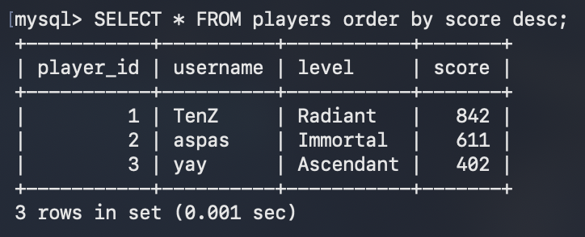
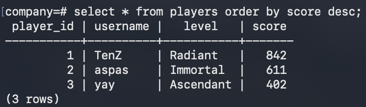
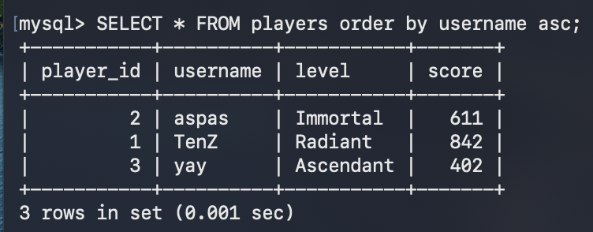
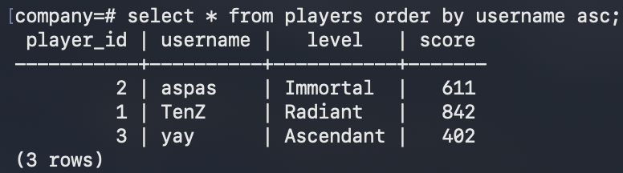
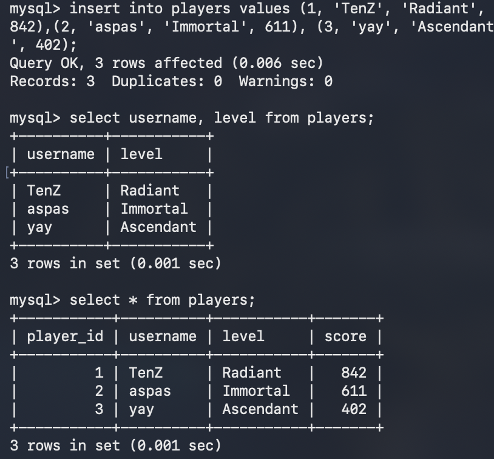
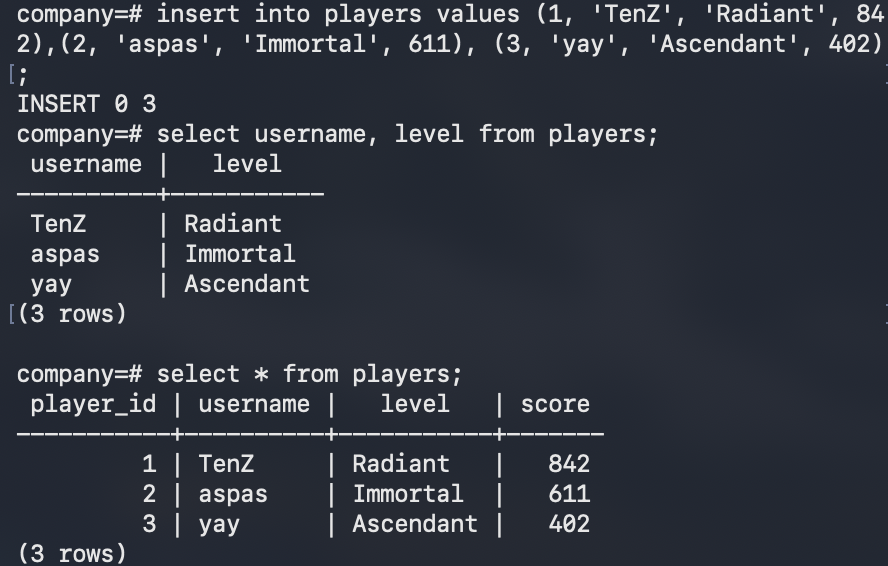
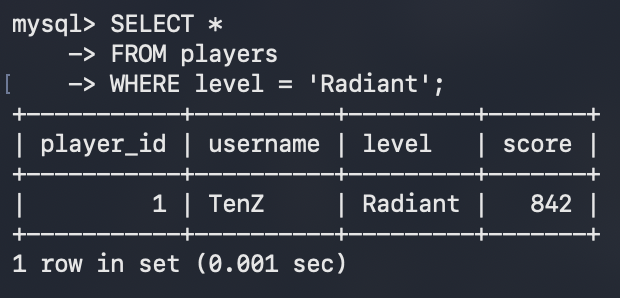
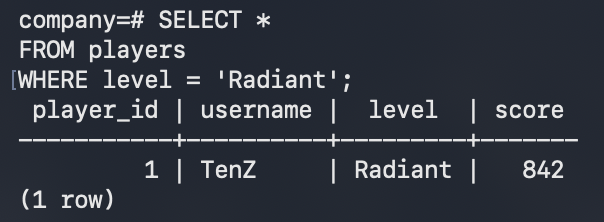

Difficulty: Easy
DQL commands query data from tables.
SELECT reads data from a table.
Current table:
| player_id | username | level | score |
|---|---|---|---|
| 1 | TenZ | Radiant | 842 |
| 2 | aspas | Immortal | 611 |
| 3 | yay | Ascendant | 402 |
MySQL / PostgreSQL
SELECT username, level
FROM players;
|
 |
 |
If you want to select all columns, you can use SELECT *.
Note: SELECT * returns everything, which is wasteful on large tables and couples your query to the table's
structure, preferred to be used only during development and debugging.
In production, it's better to specify the columns you need.
WHERE filters rows.
|
|
|
 |
 |
ORDER BY sorts rows.
DESC = descending order.
ASC = ascending order.
MySQL / PostgreSQL
SELECT *
FROM players
ORDER BY score DESC;
|
 |
 |
|
 |
 |
|
|
|
We covered the basic CRUD operations using SQL till now.
Next, Limit and Offset. >>
Prev, DML. <<